7 Flow
Connections and flows between entities: chord diagrams, networks, sankey and alluvial diagrams, bump charts, arc diagrams, hierarchical edge bundling, dendrograms, clustered heatmaps, circular plots and flow sunbursts (the R Graph Gallery flow pages and data-to-viz). Every layout is a function returning rows, drawn by ordinary charts; the plot/... builders return plain plot maps.
Not here: interactivity, multi-track circular plots, gradient ribbons and links, cyclic sankeys, crossing minimization beyond clustering, arcs below the line and label repel.
(ns use-cases.flow
(:require [clojure.string :as str]
[fastmath.ml.clustering :as cl]
[fastmath.random :as r]
[fastmath.stats :as stats]
[cljplot2.chart :as chart]
[cljplot2.core :as plot]
[cljplot2.data.graph :as graph]
[cljplot2.data.tree :as tree]
[notebook-utils :as nu]))(def migration
"Flows between regions without the zeros and the diagonal; the file spells some names with dots."
(let [region #(str/replace % "." " ")]
(vec (for [{:keys [from to value]} (nu/dataset :migration)
:when (and (pos? (double value)) (not= (region from) (region to)))]
{:from (region from) :to (region to) :value value}))))(def characters
(mapv (fn [{:keys [name group]}] {:id name :group (str "group " group)}) (nu/dataset :miserables-characters)))(def co-occurrences (nu/dataset :miserables-links))(def mtcars (nu/dataset :mtcars))(def mtcars-variables [:mpg :cyl :disp :hp :drat :wt :qsec :vs :am :gear :carb])(def standardized
"mtcars columns as z-scores, one row vector per car."
(let [moments (into {} (for [k mtcars-variables :let [vs (map k mtcars)]] [k [(stats/mean vs) (stats/stddev vs)]]))]
(mapv (fn [car] (mapv (fn [k] (let [[mu sd] (moments k)] (/ (- (double (k car)) (double mu)) (double sd))))
mtcars-variables))
mtcars)))(def air-passengers (nu/dataset :air-passengers))7.1 Chord diagram
Flows between groups around a circle: a ring sector per group, sized by its flow, and a ribbon per link.
7.1.1 Chord diagram from an edge list
Migration between ten world regions: directed - a ribbon per flow, as wide as the flow at both ends, the sectors holding the flows out and in - and undirected, a ribbon per pair of regions, as wide as their exchange.
Source: R Graph Gallery - Chord diagram; data-to-viz - Chord diagram (1, 2). Data: Migration flows between world regions, data-to-viz example dataset 13_AdjacencyDirectedWeighted (long form; Yan Holtz, after Abel & Sander 2014); licence: MIT (data_to_viz repository).
(plot/render-image
(plot/arrange [(plot/chord migration {:directed? true :min-value 0.1 :title "directed flows"})
(plot/chord migration {:min-value 0.1 :title "exchange between regions"})]
{:columns 2})
{:width 1000 :height 520})
7.1.2 Colours, gaps, order and weak links
:min-value drops the weak flows that clutter the middle, :pad widens the gaps, :order :cluster puts regions with similar partners side by side, and the palette is a plot scale like any other.
Source: R Graph Gallery - Advanced chord diagram with circlize; data-to-viz - Chord diagram (1, 2). Data: Migration flows between world regions, data-to-viz example dataset 13_AdjacencyDirectedWeighted (long form; Yan Holtz, after Abel & Sander 2014); licence: MIT (data_to_viz repository).
(plot/render-image
(plot/chord migration {:directed? true :min-value 0.5 :pad 4 :order :cluster
:scales {:color {:range :category10}}
:title "Flows of at least 0.5 million, clustered order"})
{:width 700 :height 700})
7.2 Network
Nodes and the edges between them, placed by a layout; colour, size and width carry node and edge variables.
7.2.1 From an adjacency table
Co-authorships between researchers come as a table - a row per author, a column per author, 1 for a joint paper. The table isn’t square, so its cells become edge rows directly (graph/adjacency->edges reads square matrices, see the correlation network below); the force layout places them, seeded for a stable picture. Groups of authors without joint papers between them are laid out apart and packed in rows, the largest first.
Source: R Graph Gallery - Input formats for network charts; data-to-viz - Network (1, 2). Data: Co-authorships between researchers, data-to-viz example dataset 13_AdjacencyUndirectedUnweighted (Yan Holtz); licence: MIT (data_to_viz repository).
(def coauthor-edges
"One edge per co-author pair (the table lists some pairs both ways)."
(->> (nu/dataset :coauthors)
(mapcat (fn [{:keys [from] :as row}]
(for [[k v] (dissoc row :from) :when (= 1 v)] (vec (sort [from (name k)])))))
(remove (fn [[a b]] (= a b)))
(distinct)
(mapv (fn [[a b]] {:from a :to b}))))(plot/render-image
(plot/network coauthor-edges {:rng (r/rng :mersenne 11) :node-style {:size 8}
:title (str (count coauthor-edges) " co-authorships")})
{:width 750 :height 700})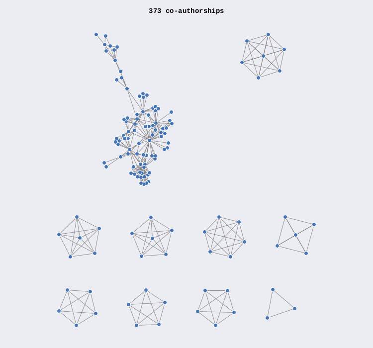
7.2.2 Layouts
The same graph on a circle and with the Fruchterman-Reingold force layout: groups of characters that appear together only come out of the force layout.
Source: R Graph Gallery - Network layouts; data-to-viz - Network (1, 2). Data: Les Misérables character co-occurrences, vega-datasets miserables.json (D. E. Knuth, The Stanford GraphBase, 1993); licence: Not specified (vega-datasets lists it as notspecified).
(plot/render-image
(plot/arrange (vec (for [[layout title] [[:circle "circle layout"] [:force "force layout"]]]
(plot/network co-occurrences {:nodes characters :layout layout :rng (r/rng :mersenne 3)
:mapping {:color :group} :scales {:color {:legend false}}
:title title})))
{:columns 2})
{:width 1000 :height 500})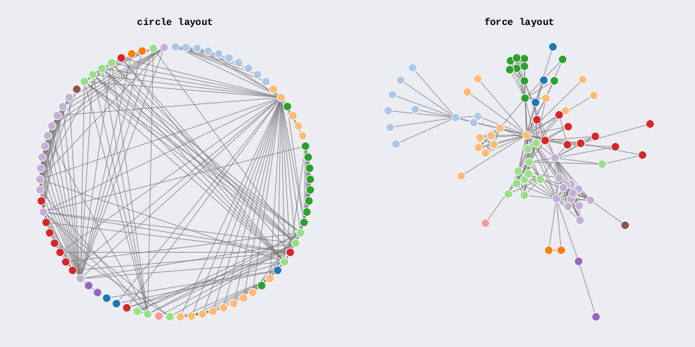
7.2.3 Node colour, size by degree
Nodes coloured by their group and sized by their number of links (:degree, computed with the graph); labels for the main characters. One size scale serves one variable, so edge widths (below, for migration flows) and node sizes don’t go together.
Source: R Graph Gallery - igraph plotting parameters, map a colour, node size by edges number (1, 2, 3). Data: Les Misérables character co-occurrences, vega-datasets miserables.json (D. E. Knuth, The Stanford GraphBase, 1993); licence: Not specified (vega-datasets lists it as notspecified).
(plot/render-image
(plot/network co-occurrences {:nodes characters :rng (r/rng :mersenne 3)
:mapping {:color :group :size :degree}
:scales {:size {:title "links"}}
:labels #(when (>= (long (:degree %)) 10) (:id %))
:title "Les Misérables: characters appearing together"})
{:width 900 :height 750})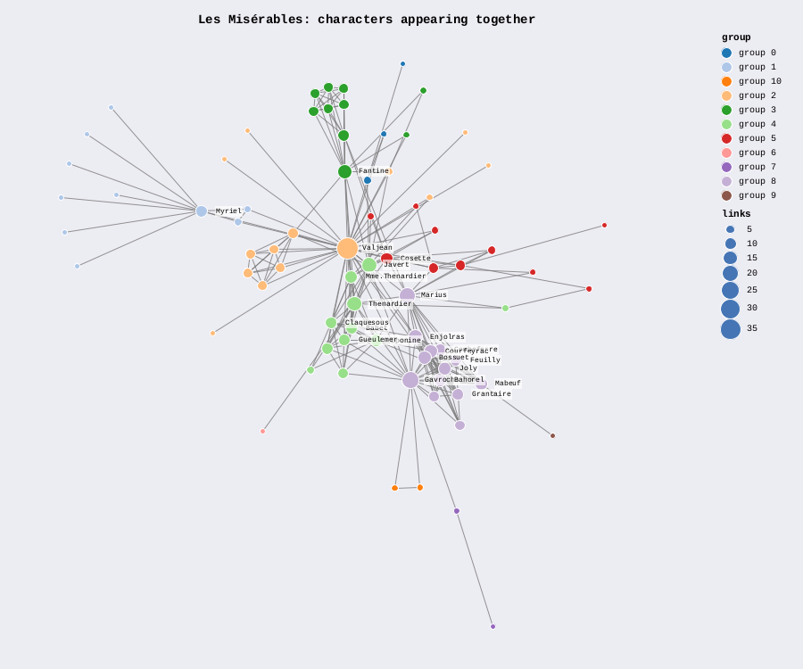
7.2.4 Correlation network
Variables linked when their correlation is strong (|r| > 0.7): the matrix becomes edges with graph/adjacency->edges, the weight is |r| and the colour its sign.
Source: R Graph Gallery - Correlation network with igraph. Data: Motor Trend car road tests (1974), R datasets package mtcars (Henderson & Velleman 1981); licence: Part of R (GPL-2 | GPL-3).
(def correlation-edges
(let [names (mapv name mtcars-variables)
r (stats/correlation-matrix (mapv (fn [k] (mapv k mtcars)) mtcars-variables))
strong (mapv (fn [row] (mapv #(if (> (Math/abs (double %)) 0.7) % 0) row)) r)]
(mapv #(assoc % :r (:value %) :value (Math/abs (double (:value %))))
(graph/adjacency->edges strong names {:directed? false}))))(plot/render-image
(plot/network correlation-edges {:nodes (mapv (fn [k] {:id (name k)}) mtcars-variables) :rng (r/rng :mersenne 5)
:labels true
:edge-mapping {:color #(if (pos? (double (:r %))) "positive" "negative")}
:scales {:color {:range {"positive" [33 102 172] "negative" [178 24 43]} :title "r"}}
:title "mtcars variables with |r| > 0.7"})
{:width 700 :height 600})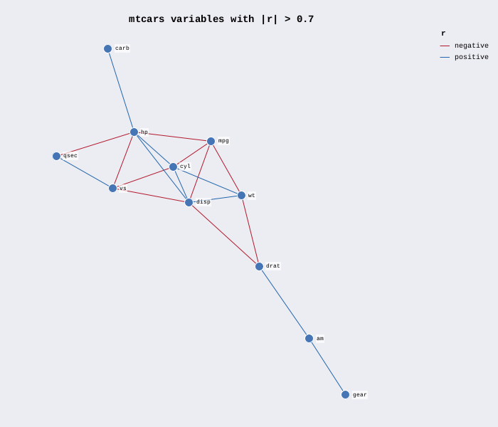
7.2.5 Directed, weighted edges
Migration flows as arrows ending at the target’s edge, edge widths from the flows’ size scale.
Source: data-to-viz - Network. Data: Migration flows between world regions, data-to-viz example dataset 13_AdjacencyDirectedWeighted (long form; Yan Holtz, after Abel & Sander 2014); licence: MIT (data_to_viz repository).
(plot/render-image
(plot/network migration {:directed? true :layout :circle :labels true
:edge-mapping {:size :value}
:scales {:size {:range [0.5 6] :title "migrants, M"}}
:title "Migration between world regions"})
{:width 750 :height 650})
7.3 Sankey
Flows through stages: nodes in columns, as tall as their flow, bands between them as wide as the flow.
7.3.1 Sankey diagram, node and link colours
The UK energy flows of a 2050 scenario: sources on the left, uses on the right (:align :justify, the default), bands in their source’s colour; then every node as far left as it can go, bands in their target’s colour.
Source: R Graph Gallery - Sankey diagram with networkD3, custom colours; data-to-viz - Sankey (1, 2, 3). Data: UK energy flows in 2050 (a DECC scenario), networkD3 JSONdata/energy.json (the d3 sankey example; UK Department of Energy & Climate Change 2050 Calculator); licence: networkD3 is GPL-3; the data’s licence isn’t stated.
(def energy-flows (nu/dataset :energy))(plot/render-image
(plot/sankey energy-flows {:title "UK energy flows in 2050 (TWh)"})
{:width 1000 :height 650})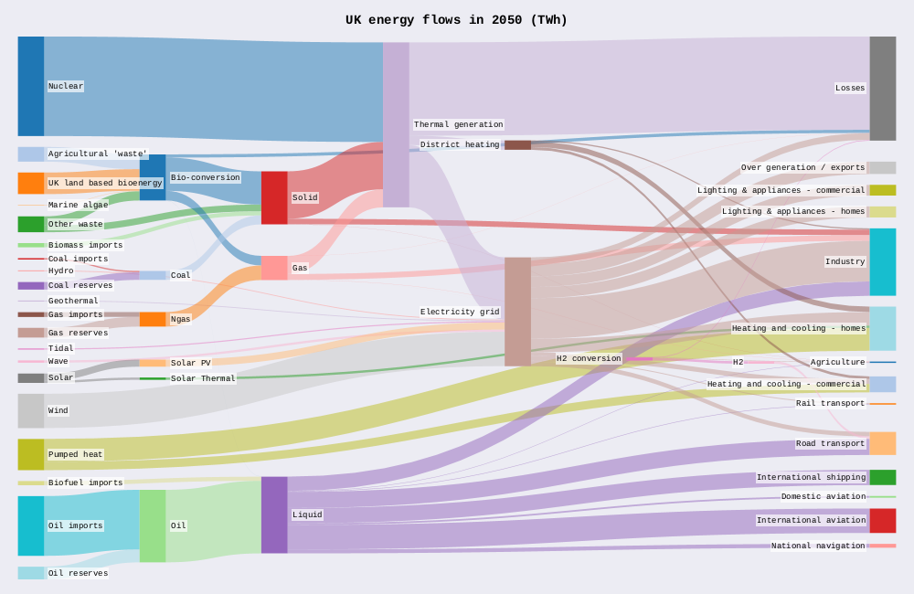
(plot/render-image
(plot/sankey energy-flows {:align :left :link-color :target :title "Left-aligned, bands in the target's colour"})
{:width 1000 :height 650})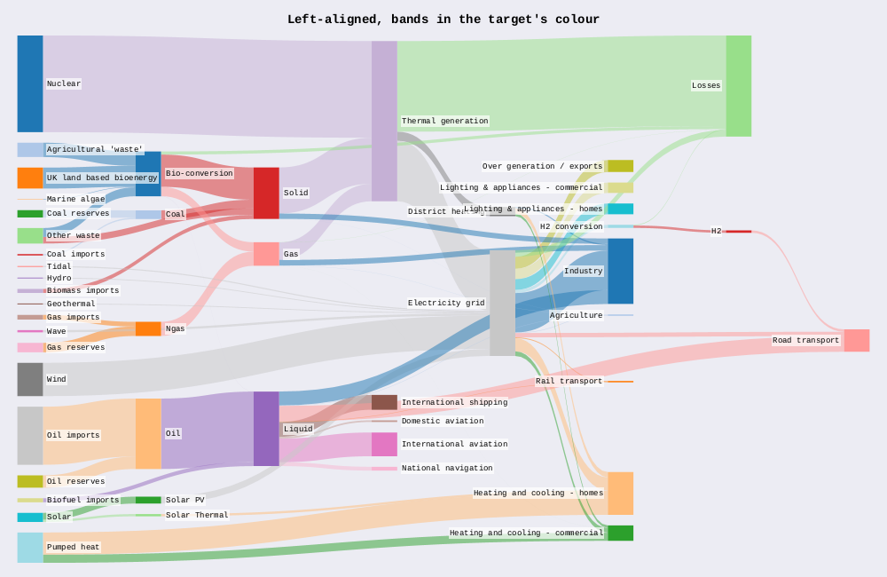
7.3.2 Alluvial diagram
A column per variable, a stratum per level and strands between neighbouring columns, coloured by the class all the way through.
Source: R Graph Gallery - Sankey diagram (alluvial section). Data: Titanic passengers and crew by class, sex, age and survival, R datasets package Titanic (Dawson 1995); licence: Part of R (GPL-2 | GPL-3).
(plot/render-image
(plot/alluvial (nu/dataset :titanic) {:axes [:class :sex :age :survived] :value :n :fill :class
:theme {:palette {:color :set1}}
:title "Titanic: 2201 people by class, sex, age and survival"})
{:width 900 :height 600})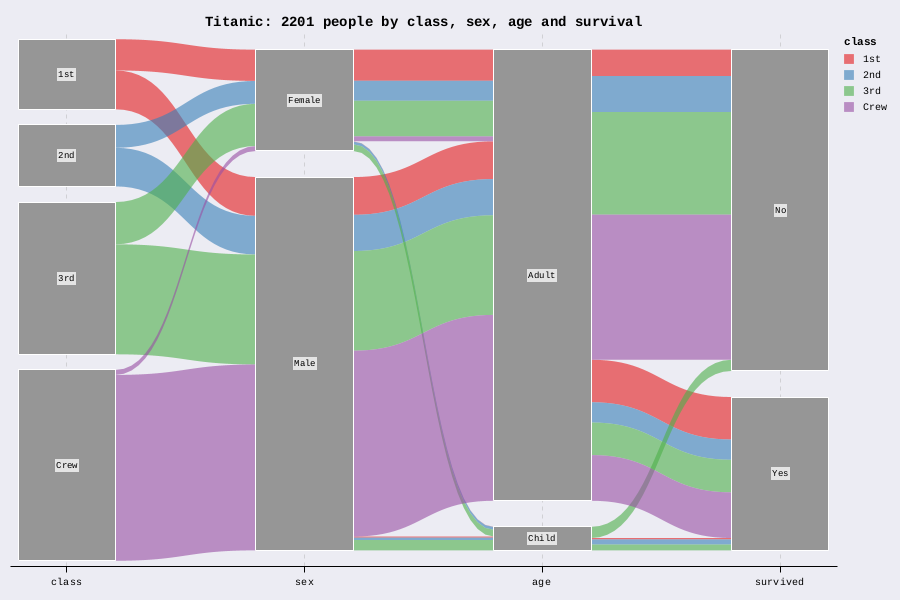
7.3.3 Bump chart
Ranks over time: the months ranked by passengers within each year. The summer months climb to the top as air travel grows; November stays near the bottom.
Source: R Graph Gallery - Sankey diagram (bump chart section). Data: Monthly airline passengers, 1949-1960, R datasets package AirPassengers (Box & Jenkins 1976); licence: Part of R (GPL-2 | GPL-3).
(def month-ranks
(vec (for [[year rows] (group-by :year air-passengers)
[rank row] (map-indexed vector (sort-by :passengers > rows))]
(assoc row :rank (inc rank)))))(plot/render-image
{:data month-ranks :mapping {:x :year :y :rank :color :month}
:charts [(chart/line {:width 2})
(chart/scatter {:size 7})
(chart/text {:data (filter #(= 1949 (:year %)) month-ranks) :mapping {:x :year :y :rank :label :month}
:anchor [:right :middle] :offset [-8 0]})
(chart/text {:data (filter #(= 1960 (:year %)) month-ranks) :mapping {:x :year :y :rank :label :month}
:anchor [:left :middle] :offset [8 0]})]
:scales {:y {:domain [12.5 0.5] :nice false :ticks (vec (range 1 13))}
:x {:domain [1948 1961] :nice false :ticks (vec (range 1949 1961))}
:color {:domain ["Jan" "Feb" "Mar" "Apr" "May" "Jun" "Jul" "Aug" "Sep" "Oct" "Nov" "Dec"]
:range :category20 :legend false}}
:labels {:title "Months ranked by air passengers, 1949-1960" :x nil :y "rank"}}
{:width 900 :height 550})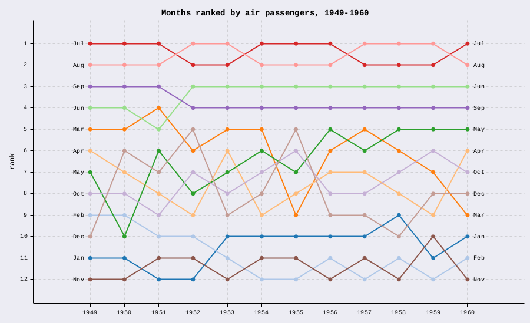
7.4 Arc diagram
Nodes on a line, every link a semicircle above it: readable when the order puts linked nodes close together.
Source: data-to-viz - Arc diagram. Data: Les Misérables character co-occurrences, vega-datasets miserables.json (D. E. Knuth, The Stanford GraphBase, 1993); licence: Not specified (vega-datasets lists it as notspecified).
(plot/render-image
(plot/arrange [(plot/arc co-occurrences {:nodes characters :mapping {:color :group}
:title "Les Misérables: input order"})
(plot/arc co-occurrences {:nodes characters :mapping {:color :group} :order :cluster
:title "clustered order: characters seen with the same others together"})]
{:columns 1})
{:width 1000 :height 800})
7.5 Edge bundling
Links between the leaves of a hierarchy routed along it: the bundles show which packages depend on which.
7.5.1 Hierarchical edge bundling
The classes of the flare library around a circle, grouped by package, each import a curve through the package tree, coloured by the importing class’s top-level package.
Source: R Graph Gallery - Hierarchical edge bundling, custom, labels; data-to-viz - Edge bundling (1, 2, 3, 4). Data: Flare visualization toolkit class hierarchy, vega-datasets flare.json (the Flare ActionScript library’s packages and classes); licence: Not documented.
(def flare-tree (tree/from-parents (nu/dataset :flare) {:name :name}))(def flare-imports (nu/dataset :flare-dependencies))(plot/render-image
(plot/bundle flare-imports flare-tree {:from :source :to :target
:title "flare: class imports bundled along the package tree"})
{:width 800 :height 800})
7.5.2 Bundling strength
:beta straightens the curves: 0 draws straight lines, 1 follows the tree exactly.
Source: R Graph Gallery - Custom hierarchical edge bundling. Data: Flare visualization toolkit class hierarchy, vega-datasets flare.json (the Flare ActionScript library’s packages and classes); licence: Not documented.
(plot/render-image
(plot/arrange (vec (for [beta [0.0 0.5 1.0]]
(plot/bundle flare-imports flare-tree {:from :source :to :target :beta beta :labels? false
:scales {:color {:legend false}}
:title (str ":beta " beta)})))
{:columns 3})
{:width 1000 :height 380})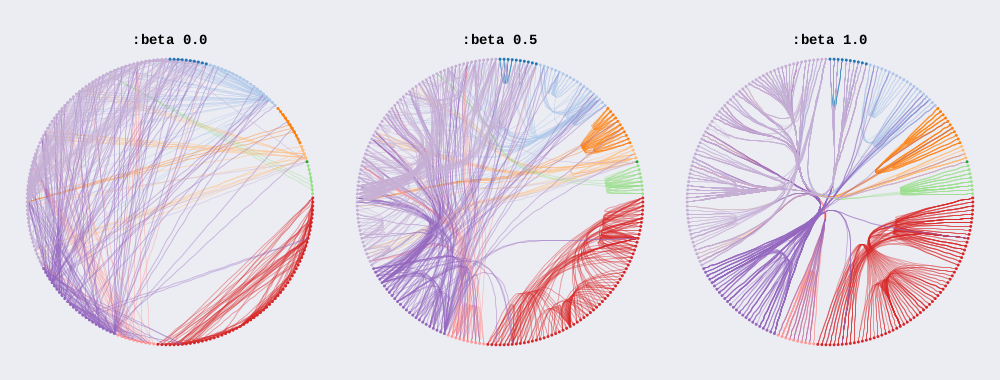
7.6 Dendrogram
A hierarchy as a tree of branches: from data with levels, or from hierarchical clustering, where the height of a merge is the distance between the groups.
7.6.1 From hierarchical data
World regions and their subregions, the tree drawn from the levels of the rows.
Source: R Graph Gallery - Dendrogram with ggraph; data-to-viz - Dendrogram (1, 2). Data: World population by region, subregion and country, data-to-viz example dataset 11_SevCatOneNumNestedOneObsPerGroup (Yan Holtz; Wikipedia); licence: MIT (data_to_viz repository).
(plot/render-image
(plot/dendrogram (tree/from-levels (nu/dataset :world-population) {:hierarchy [:region :subregion]})
{:horizontal true :group-labels? true :title "World regions and subregions"})
{:width 650 :height 650})
7.6.2 From clustering, coloured clusters, circular
Complete-linkage clustering of the standardized cars (fastmath hclust), cut into 3 clusters; the same tree around a circle.
Source: R Graph Gallery - Basic dendrogram, custom colours, circular dendrogram, dendextend (1, 2, 3, 4). Data: Motor Trend car road tests (1974), R datasets package mtcars (Henderson & Velleman 1981); licence: Part of R (GPL-2 | GPL-3).
(def car-clustering (cl/hclust standardized {:method :complete}))(def cars (mapv :model mtcars))(plot/render-image
(plot/dendrogram car-clustering {:labels cars :k 3 :theme {:palette {:color :set1}}
:title "mtcars: complete-linkage clustering, 3 clusters"})
{:width 1000 :height 500})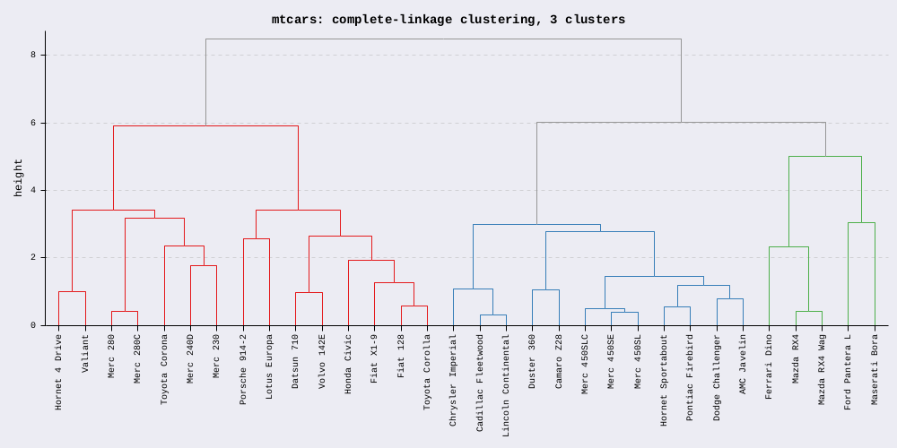
(plot/render-image
(plot/dendrogram car-clustering {:labels cars :k 3 :circular true :theme {:palette {:color :set1}}
:title "The same clustering, circular"})
{:width 700 :height 700})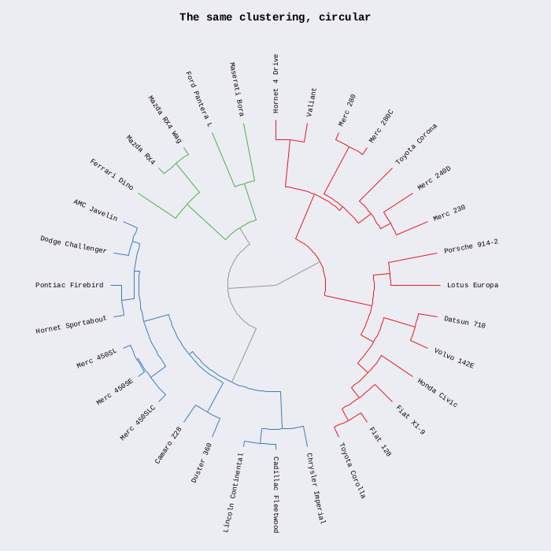
7.7 Clustered heatmap
Rows and columns of a heatmap ordered by clustering, their dendrograms beside it: similar cars and similar variables come together.
Source: R Graph Gallery - The heatmap function. Data: Motor Trend car road tests (1974), R datasets package mtcars (Henderson & Velleman 1981); licence: Part of R (GPL-2 | GPL-3).
(plot/render-image
(plot/clustered-heatmap (vec (for [[car row] (map vector cars standardized) [k v] (map vector mtcars-variables row)]
{:car car :variable (name k) :z v}))
{:row :car :col :variable :value :z
:scales {:color {:range :RColorBrewer/RdBu :midpoint 0 :reverse true :title "z-score"}}
:title "mtcars: cars and variables ordered by clustering"})
{:width 900 :height 800})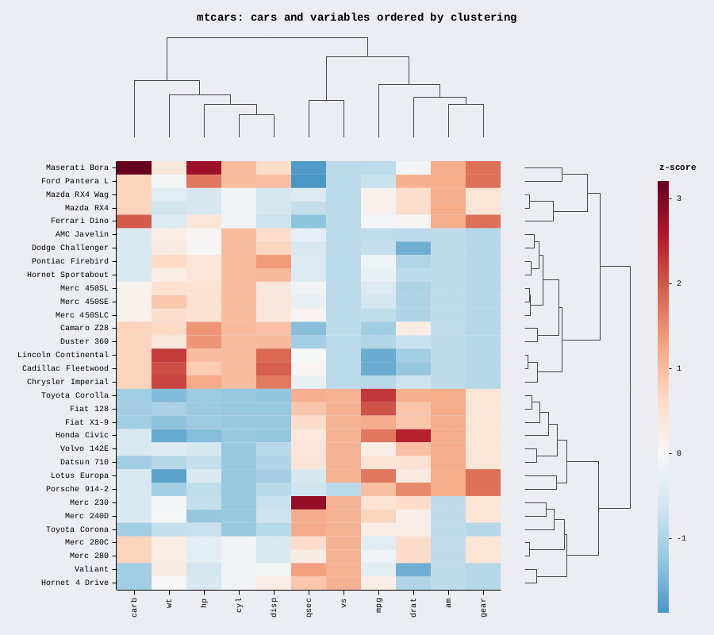
7.8 Circular plots
Ordinary charts in polar coordinates: the angle runs along a variable, the radius along another; :start, :direction, :inner and :span shape the circle.
7.8.1 Basic, customised, part of the circle
Air passengers by month around the circle, a ring per year: the default circle, then a hole, a start at 3 o’clock counter-clockwise, and half a circle.
Source: R Graph Gallery - Basic circular plot, custom a track, part of the circular plot (1, 2, 3). Data: Monthly airline passengers, 1949-1960, R datasets package AirPassengers (Box & Jenkins 1976); licence: Part of R (GPL-2 | GPL-3).
(def months ["Jan" "Feb" "Mar" "Apr" "May" "Jun" "Jul" "Aug" "Sep" "Oct" "Nov" "Dec"])(plot/render-image
(plot/arrange (vec (for [[coord title] [[{:kind :polar} "default"]
[{:kind :polar :inner 0.3 :start 90 :direction :counter-clockwise} "hole, start, direction"]
[{:kind :polar :span 180 :start -90} "half a circle"]]]
{:data air-passengers :mapping {:x :month :y :passengers :color :year}
:charts [(chart/scatter {:size 5})]
:coord coord
:scales {:x {:domain months}}
:legend false
:labels {:title title :x nil :y nil}}))
{:columns 3})
{:width 1000 :height 400})
7.8.2 Chart types, several plots
Points, a line per year and bars of the monthly totals in the same circle, and one circular plot per period.
Source: R Graph Gallery - Plot types for circular plot, several circular plots in a figure (1, 2). Data: Monthly airline passengers, 1949-1960, R datasets package AirPassengers (Box & Jenkins 1976); licence: Part of R (GPL-2 | GPL-3).
(def periods
(mapv #(assoc % :period (cond (<= (long (:year %)) 1952) "1949-1952" (<= (long (:year %)) 1956) "1953-1956" :else "1957-1960"))
air-passengers))(plot/render-image
(plot/arrange
[{:data air-passengers :mapping {:x :month :y :passengers}
:charts [(chart/scatter {:size 4})] :coord {:kind :polar :inner 0.2} :scales {:x {:domain months}}
:labels {:title "points" :x nil :y nil}}
{:data air-passengers :mapping {:x :month :y :passengers :group :year}
:charts [(chart/line {:sort false :color [70 130 180 150]})] :coord {:kind :polar :inner 0.2} :scales {:x {:domain months}}
:labels {:title "a line per year" :x nil :y nil}}
{:data air-passengers :mapping {:x :month :y :passengers}
:charts [(chart/bar {:stat :sum})] :coord {:kind :polar :inner 0.2} :scales {:x {:domain months}}
:labels {:title "bars: monthly totals" :x nil :y nil}}]
{:columns 3})
{:width 1000 :height 400})
(plot/render-image
{:data periods :mapping {:x :month :y :passengers :group :year :facet :period}
:charts [(chart/line {:sort false})]
:coord {:kind :polar :inner 0.2}
:scales {:x {:domain months}}
:labels {:title "One circular plot per period" :x nil :y nil}}
{:width 1000 :height 420})
7.9 Flow sunburst
Sequences of steps (website visits, here 2000 synthetic sessions) as rings from the centre: every step coloured by its page wherever it occurs, end where a session stops.
Source: data-to-viz - Sunburst.
(def pages ["home" "search" "product" "account" "cart" "help"])(def visits
"2000 sessions starting at home: each step to another page or the end (more likely the longer the session), at
most 6 pages; a seeded random walk."
(let [g (r/rng :mersenne 7)
weights {"home" [0 5 3 2 0 1] "search" [1 2 6 0 1 1] "product" [1 2 2 1 4 1]
"account" [2 0 1 1 1 2] "cart" [0 0 2 2 0 1] "help" [2 2 0 2 0 1]}
pick (fn [ws] (let [total (double (reduce + ws)) u (* total (r/drandom g))]
(loop [i 0 acc 0.0]
(let [acc (+ acc (double (ws i)))]
(if (or (< u acc) (= i (dec (count ws)))) i (recur (inc i) acc))))))]
(vec (for [_ (range 2000)]
{:sequence (str/join "-" (loop [path ["home"]]
(if (or (= 6 (count path)) (< (r/drandom g) (* 0.12 (count path))))
(conj path "end")
(recur (conj path (pages (pick (weights (peek path)))))))))}))))(plot/render-image
(plot/sequences visits {:scales {:color {:domain (conj pages "end")}}
:title "2000 website visits: pages in order from the centre"})
{:width 700 :height 650})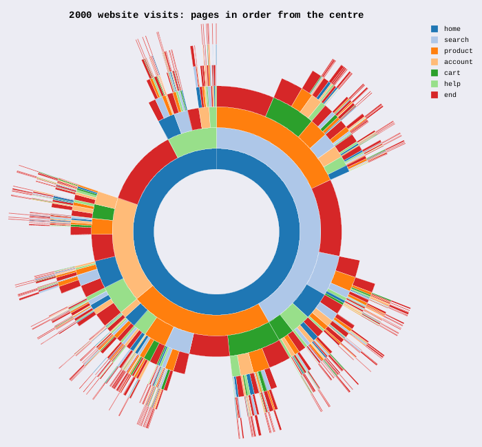
7.10 Caveats
A network of many nodes and links becomes a hairball: filter weak links, or show the graph as an arc diagram or an adjacency heatmap instead.
Order changes the reading of chord and arc diagrams:
:order :clusterputs nodes with the same partners together; input order may scatter them.Weak links clutter chord and sankey diagrams;
:min-valueleaves them out (and the layout says how many).Sankey diagrams show flows that go one way: a flow back to an earlier node is a cycle the layout refuses.
Widths and areas encode values: a band twice as wide is twice the flow, a sector twice as long twice the total.
Source: data-to-viz - Caveats: spaghetti plot, order your data (1, 2).
source: notebooks/use_cases/flow.clj